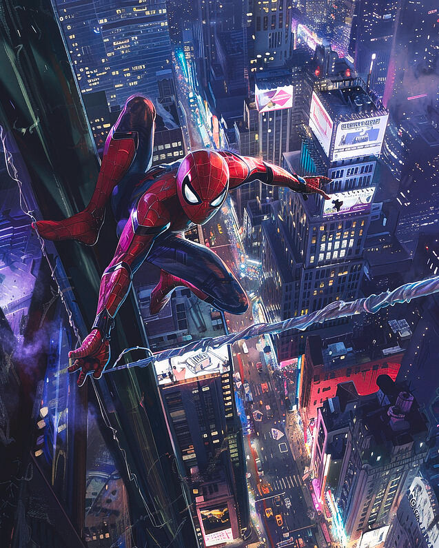

Spider-Man Spotted Swinging Through Tokyo!
BREAKING NEWS! New footage shows the web-slinger zipping past Shibuya Crossing, sparking theories of multiverse activity. Locals report heroic acts and strange web patterns across rooftops. Is this a new Spider-Man or a variant from another dimension? Stay tuned as the mystery unfolds.